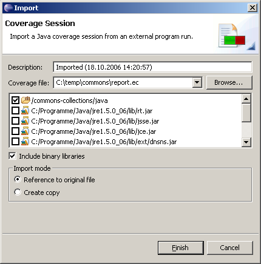
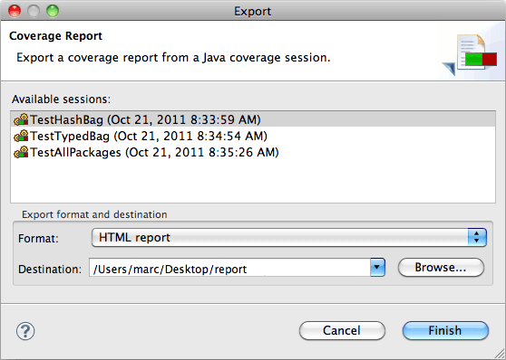

While EclEmma is primarily designed for test runs and analysis within the Eclipse workbench, it provides import and export functionality.
If your program is launched outside the Eclipse debugging environment, you
might import EMMA coverage (*.ec) or session files
(*.es) from these launches. This allows to study the coverage
results directly in your source code. The Coverage Session import
wizard can be activated form the File → Import... menu or from the
Coverage view's context menu.

The wizard dialog requires you to specify the following information:
*.ec) or session file (*.es)
If you keep a reference to the original coverage file (check the corresponding
import option) you can simply reload the coverage data after a new program
run. For this use the Refresh option from the context menu of the
Coverage view or simply hit the F5 key.
Coverage analysis is based on runtime coverage data plus so called Meta data derived from the corresponding class files. For the import you can select whether the Meta data should be taken from the imported EMMA session file or from the classes compiled locally within your workbench.
Warning: If the Meta data and runtime coverage data are not based on the same class files, no or improper coverage information will be visualized.
The session export wizard allows to export coverage sessions in one of these formats:
The Coverage Report export wizard can be activated form the File → Export... menu or from the Coverage view's context menu. There must be at least one coverage session available to use the export wizard.

Select one of the existing sessions and the export format.